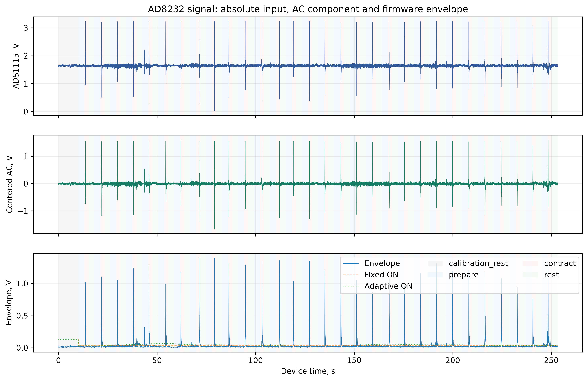
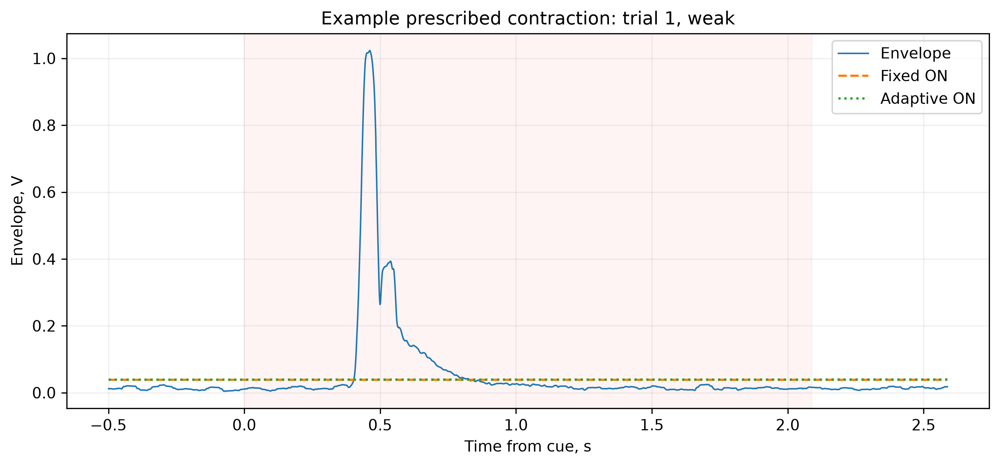
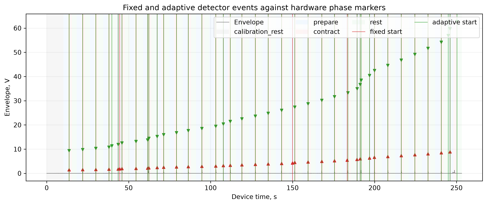
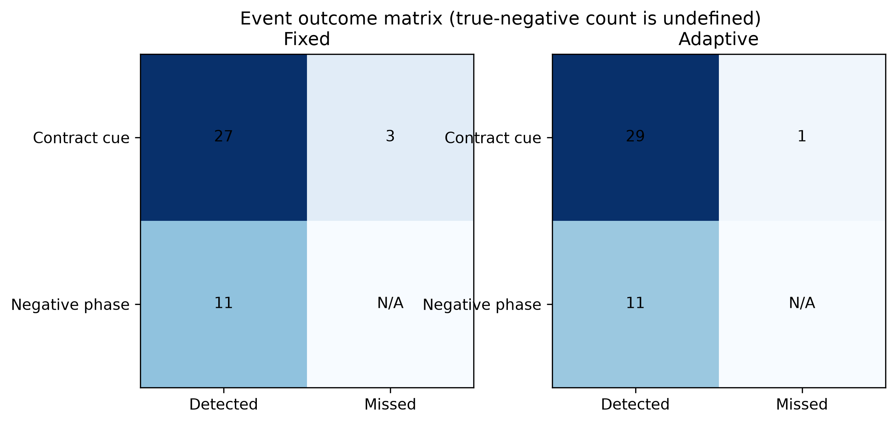
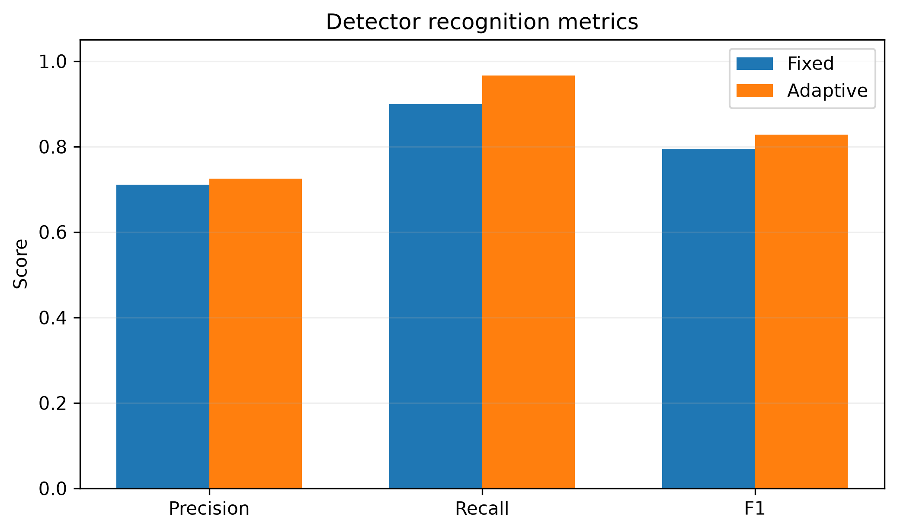
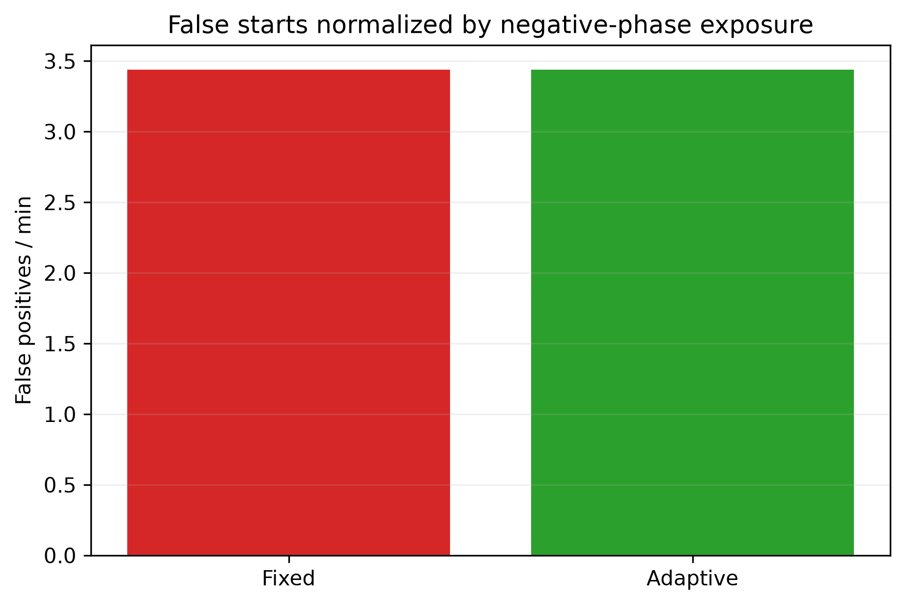
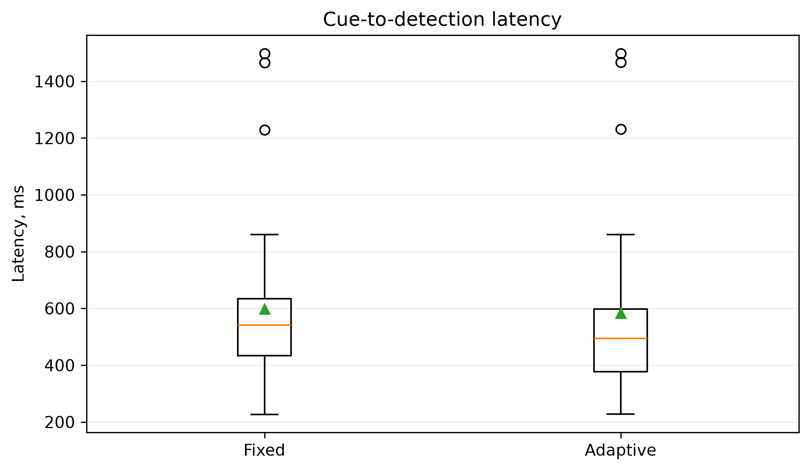
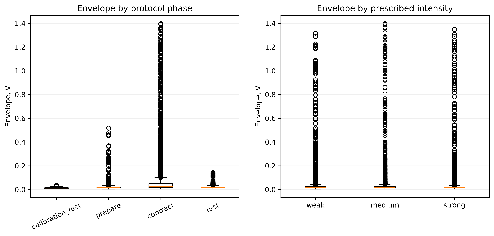
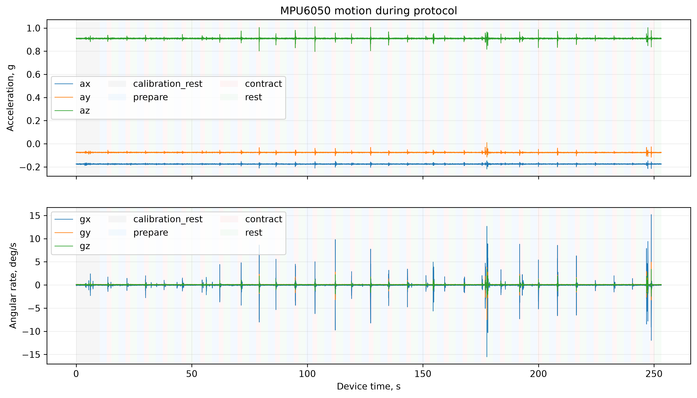
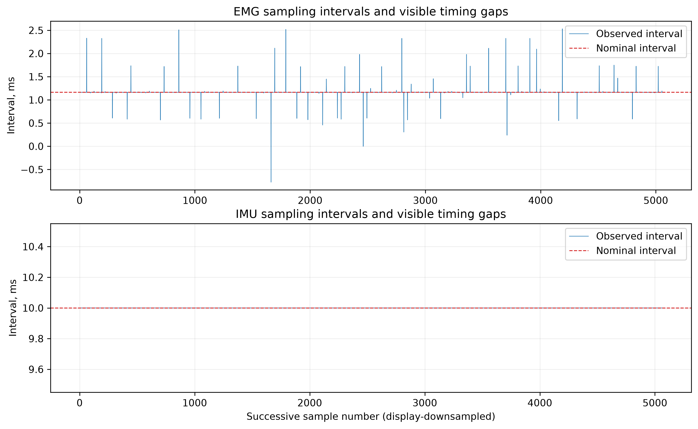

Session: 20260917_120607_62173cd4; outcome:
completed.
Metrics use device-timestamped hardware phase markers. Prescribed weak/medium/strong labels are protocol instructions, not measured force.
| Stream | Samples | Rate, Hz | Index gaps | Timer gaps |
|---|---|---|---|---|
| emg | 217408 | 858.61 | 313 | 310 |
| imu | 25320 | 100 | 0 | 0 |
| Detector | TP | FP | FN | Precision | Recall | F1 | FP/min | Cue-to-detection, ms | Trial bootstrap 95% CI |
|---|---|---|---|---|---|---|---|---|---|
| Fixed | 27 | 11 | 3 | 0.71053 | 0.9 | 0.79412 | 3.4393 | 597.85 | {"precision": [0.5853658536585366, 0.8529411764705882], "recall": [0.7666666666666667, 1.0], "f1": [0.676056338028169, 0.9090909090909091], "cue_to_detection_latency_ms_mean": [486.07659017857145, 722.6656024999999]} |
| Adaptive | 29 | 11 | 1 | 0.725 | 0.96667 | 0.82857 | 3.4393 | 583.28 | {"precision": [0.6086956521739131, 0.8571428571428571], "recall": [0.9, 1.0], "f1": [0.7297297297297297, 0.923076923076923], "cue_to_detection_latency_ms_mean": [478.2933179310345, 706.0472303571427]} |










{
"participant_id": "P001",
"session_note": "",
"protocol": {
"repetitions": 30,
"prepare_s": 3.0,
"contract_s": 2.0,
"rest_s": 3.0,
"seed": 20260916
},
"algorithm": {
"on_coefficient": 6.0,
"off_coefficient": 3.0,
"motion_gyro_dps": 20.0,
"motion_accel_delta_g": 0.25
},
"firmware": {
"target": "esp32s3",
"protocol_version": 1
},
"serial_port": "COM13",
"prescribed_intensity_note": "weak/medium/strong are instructions, not measured force",
"session_id": "20260917_120607_62173cd4",
"application_version": "1.0.1",
"git_commit": "8d802b970f5fd35398d0c04e7cabd85c1a855926",
"started_utc": "2026-09-17T09:06:07.695724+00:00",
"outcome": "completed",
"format_version": 2,
"label_source": "device_phase_markers",
"finished_utc": "2026-09-17T09:10:20.886876+00:00",
"error": null,
"sample_counts": {
"emg": 217408,
"imu": 25320
},
"actual_sample_rates": {
"emg_hz": 858.6093121475345,
"imu_hz": 100.0
},
"transport": {
"crc_errors": 0,
"discarded_bytes": 0,
"sequence_gaps": 0
},
"hardware_status": {
"adaptive_off": 191.42063903808594,
"adaptive_on": 252.8525390625,
"ads_errors": 0,
"ads_ok": 1,
"ads_samples": 5562721,
"detector_state": 5,
"detector_state_name": "REFRACTORY",
"emg_calibrated": 1,
"fixed_off": 206.21014404296875,
"fixed_on": 308.3902587890625,
"gyro_bias_x": -261.864990234375,
"gyro_bias_y": 10.095000267028809,
"gyro_bias_z": 39.68000030517578,
"imu_calibrating": 0,
"leads": 0,
"lo_minus": false,
"lo_plus": false,
"motion": 0,
"motion_accel_delta_g": 0.25,
"motion_gyro_dps": 20.0,
"mpu_errors": 0,
"mpu_ok": 1,
"mpu_samples": 647066,
"off_coefficient": 3.0,
"on_coefficient": 6.0,
"recording": 1,
"stream_enabled": 1,
"tx_drops": 0
}
}
ADS1115 voltage is not clinical ECG amplitude. MPU6050 yaw is relative and drifts without a magnetometer. Event metrics count one first detector start per hardware-marked contraction interval. This software is a research prototype, not a medical device.